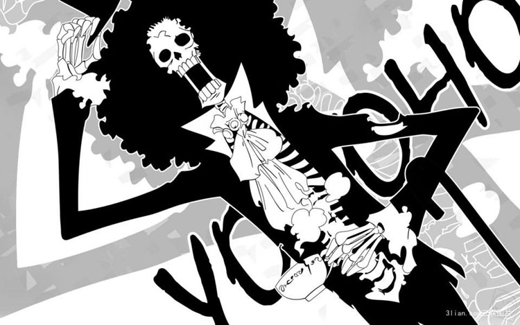
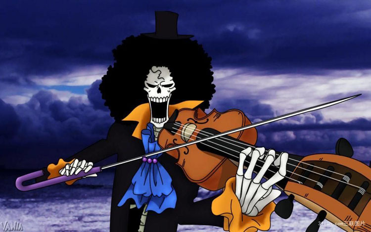
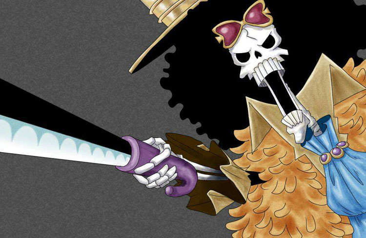
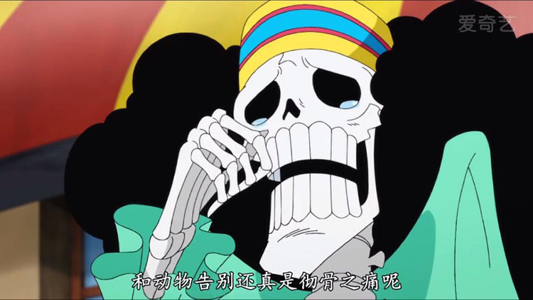

布鲁克号称“鼻歌”，现为草帽海贼团音乐家。原本是某国护卫队团长，后加入入伦巴海贼团，50年前跟鲸鱼拉布约定在“双子峡”重逢。
后来在魔幻三角地带遇到敌人并遭遇毒手，因黄泉果实的能力，灵魂能走出黄泉并准备回身体时，在魔幻三角地带迷路一年，找到的身体已经变成骷髅，但爆炸头仍然存在，自此他只能以骷髅的状态存在。 幽灵岛战役结束后，从路飞的口中得知伙伴拉布现在平安无事的消息，为了履行和拉不的约定，才正式加入草帽海贼团。
正式成为海贼草帽团的成员没有什么大的动作，并没有像索隆、山治那样成为路飞的左膀右臂。即使一伙人历练了两年，布鲁克也算是最轻松的一个了。
布鲁克弹奏音乐时灵魂融入音乐中，会更加强烈的震慑他人灵魂，把人们带入音乐的世界！甚至让他人看到幻象！
布鲁克之所以能成为灵歌之王，一方面是布鲁克的音乐才能，另一方面，黄泉果实能刺激人的灵魂，让人产生幻觉。